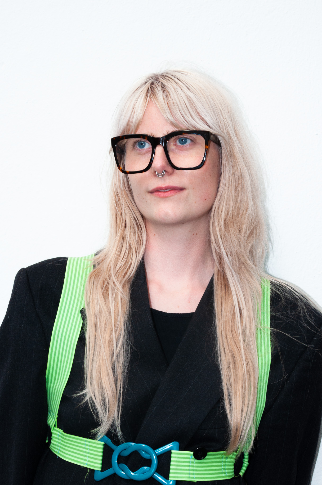

▸
▸
▸
Maja Bay (she/they) is a Danish artist and designer navigating the underlying structures of the mundane. Based in the Netherlands, Bay's work utilises a framework interaction, character work and play to expose the uncanny nature of the objects and systems we take for granted. Through a multidisciplinary lens, with a focus on digital and textile materialities, they probe the friction between the digital self or the cultural phenomenon and the physical body. Injecting these with humour, Bay creates platforms for new interactions, repositioning the body as the primary site for understanding our digital traces and everyday occurrences.
if you want to see more of my work, here's my instagram! ☺☺☺
Instagram: @maja.bythebay
